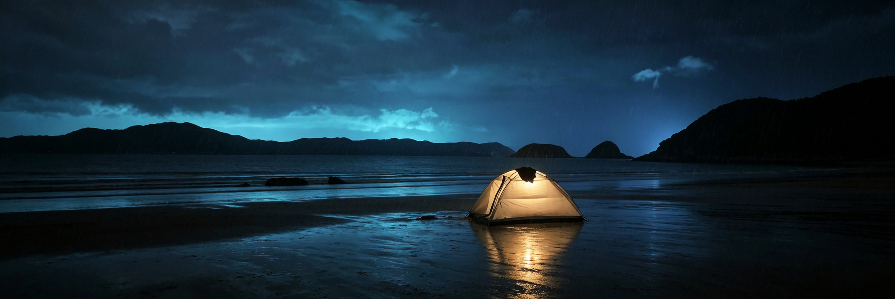
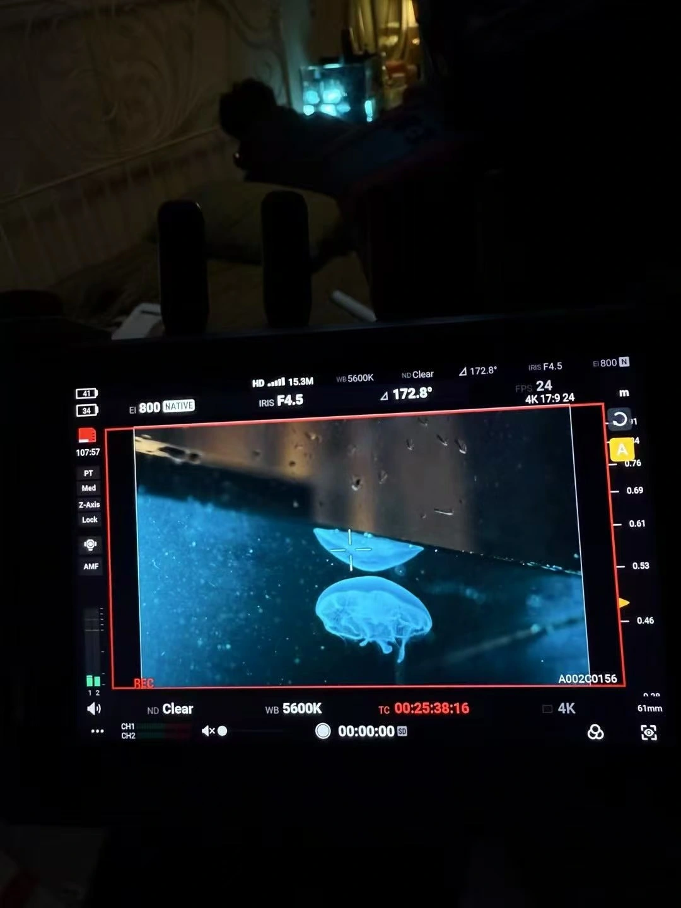
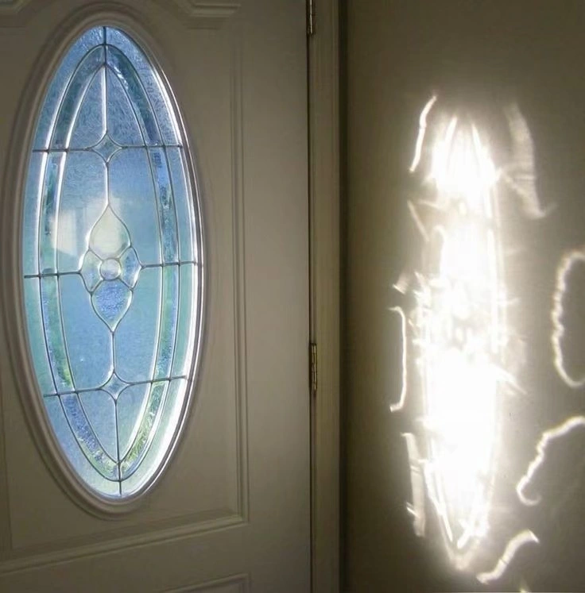

RACHEL XU / SELECTED WORKS
我所建构的世界
视觉 · 材料 · 空间 · 声音
01 / 12
LUMAARE
品牌 / 情绪与形态
拖动探索 · 点击进入

PROLOGUE / 01
沿着光，
走向海洋。
我把感受，变成可以进入的世界。
SELECTED WORKS / 2026
我所建构的世界
颜色、材料、声音，成为不同的入口。
BEHIND THE WORK
从画面，到现场。
作品之外，保留制作发生的痕迹。

查看现场与实物记录 ＋
THE PERSON BEHIND THE WORK
我是许多。
Rachel Xu
我通过颜色、氛围与视觉语言，建构自己的世界。
把情绪转化为形式，把想法转化为体验。
视觉传达 · 公共艺术 · 影像与声音实验
回到作品 ↑